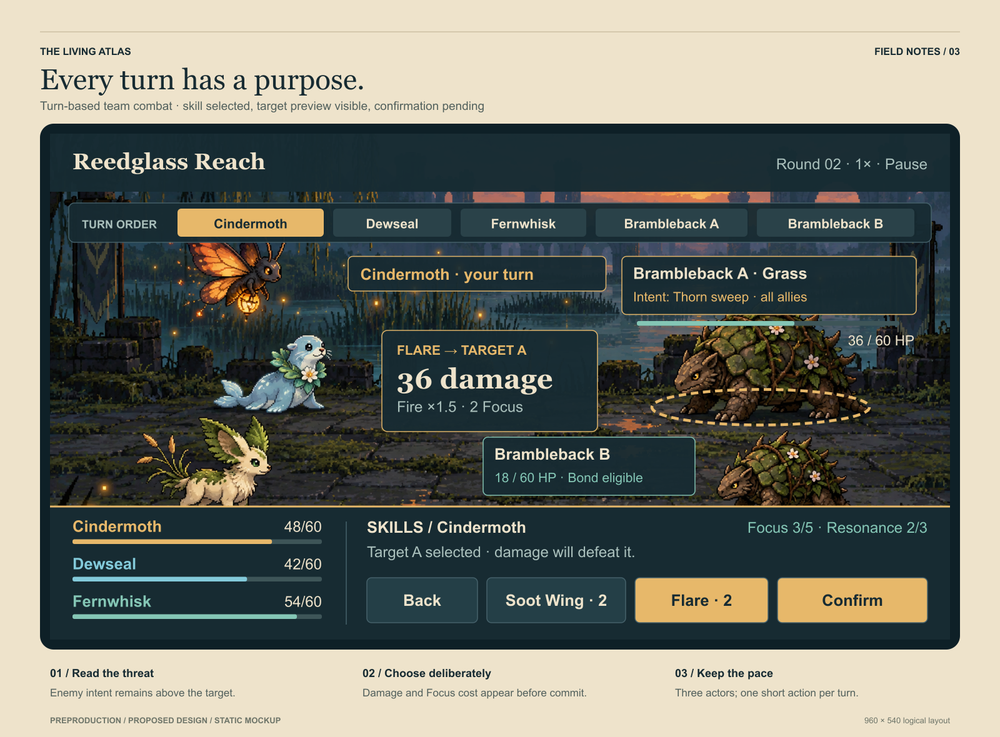
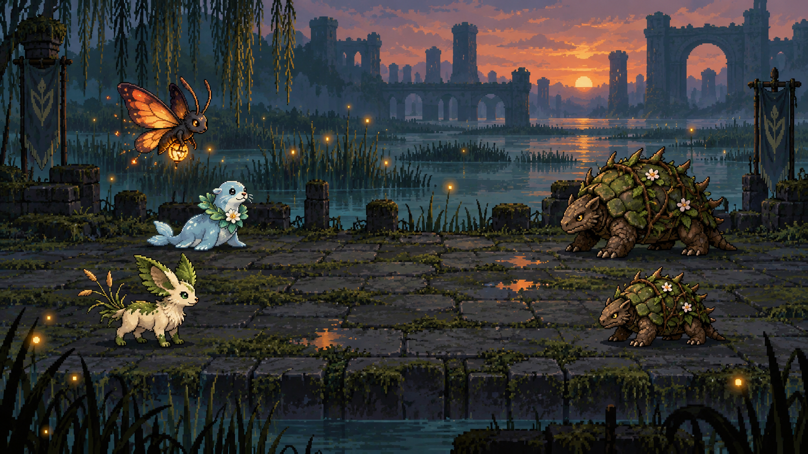
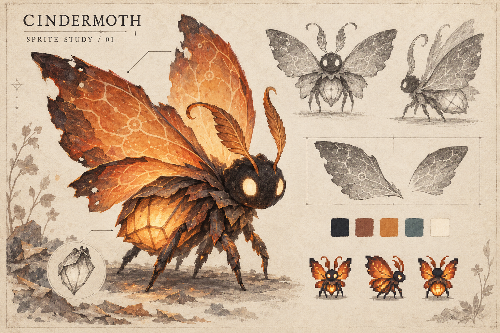
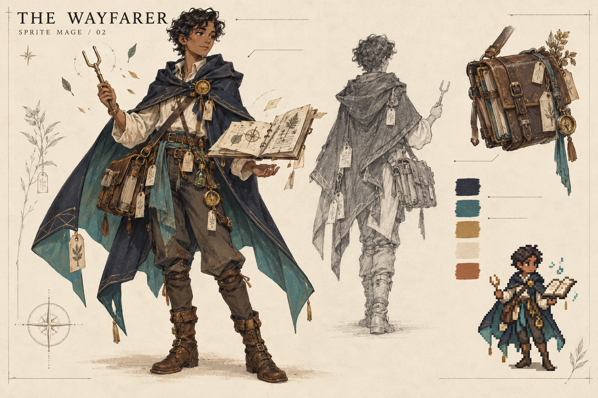
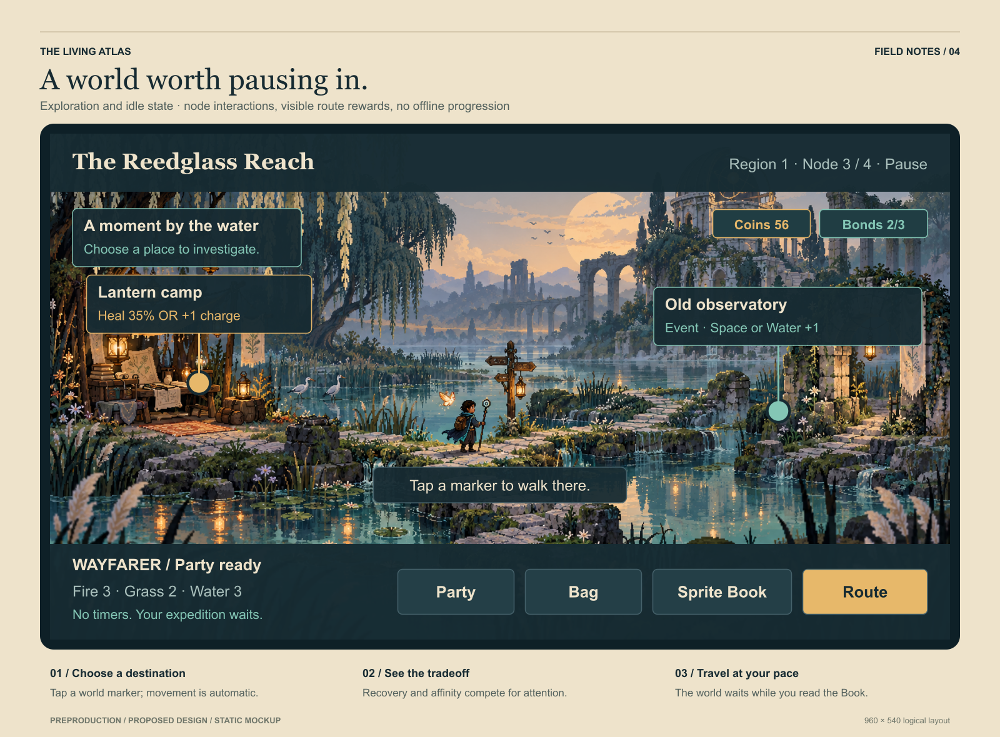
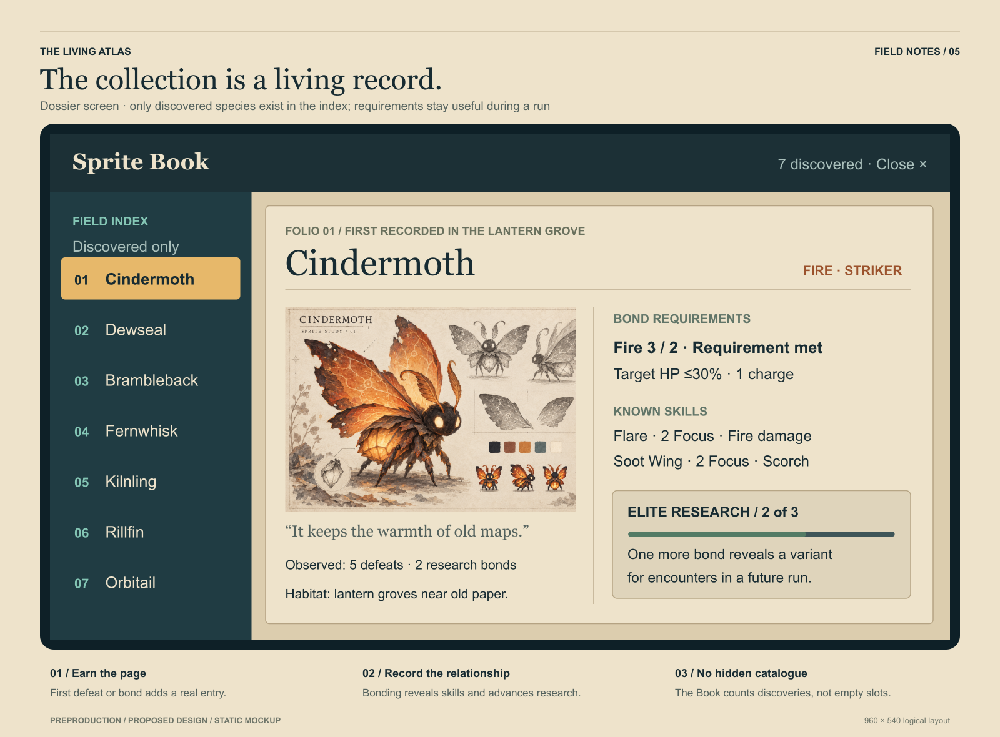
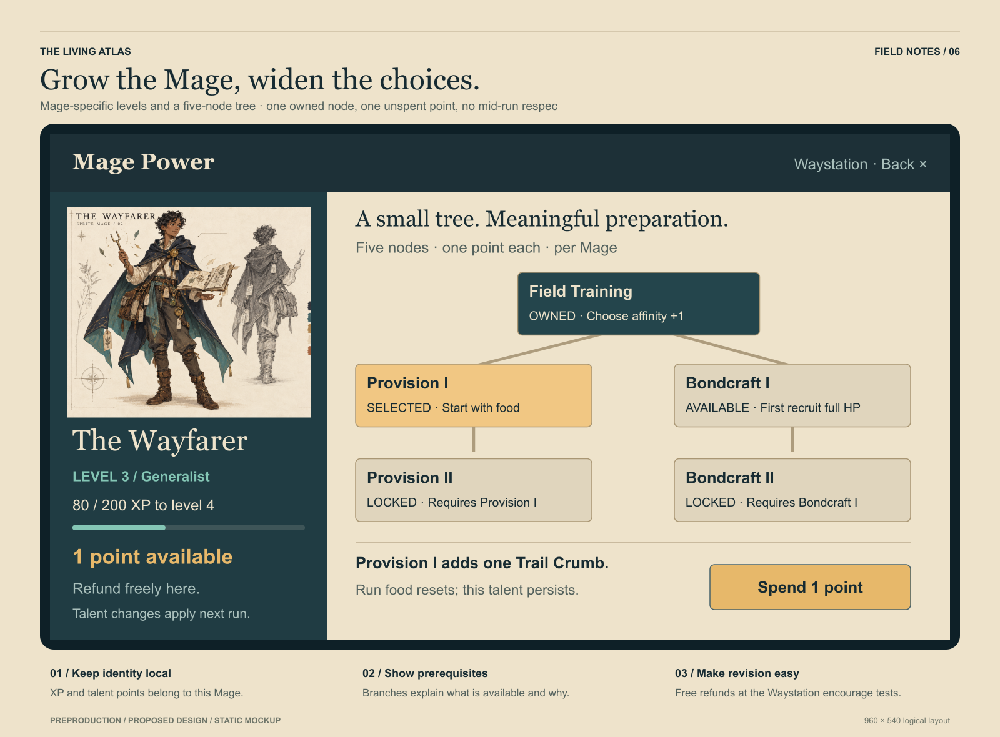
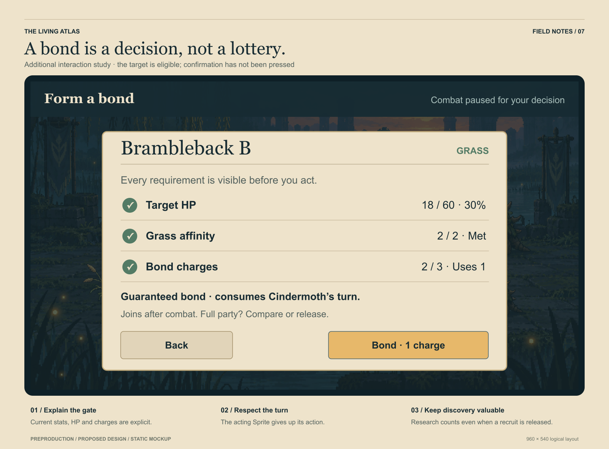

The selected visual reference
ACCEPTED CONCEPT DIRECTION

Surrounding area
Each battle depicts its local terrain, atmosphere, and setting. Shared exploration scenes versus matching combat scenes remains open.
Idle body + emission
Sprites need body idle animations and emissive effects. Production layers, loop timings, and pixel resolution still need review.
Random idle emotes
Sprites occasionally cycle through personality animations during combat. Emotes must support clear tactical decisions.
View the combat scene without interface overlays

Unapproved historical studies · 6 views
The owner selected only the combat view. These earlier designs are preserved for history and must not be treated as approved game visuals. The Book, progression, and bonding requirements remain; their presentation needs a new pass.
UNAPPROVED HISTORICAL STUDY
Cindermoth character sheet


UNAPPROVED HISTORICAL STUDY
Wayfarer character sheet


UNAPPROVED HISTORICAL STUDY
Exploration



UNAPPROVED HISTORICAL STUDY
Sprite Book



UNAPPROVED HISTORICAL STUDY
Mage progression



UNAPPROVED HISTORICAL STUDY
Bonding modal



No animation clips have been produced yet. The animation brief is a proposed production specification. Timing, emission behavior, scene transitions, and device performance still require real motion studies.